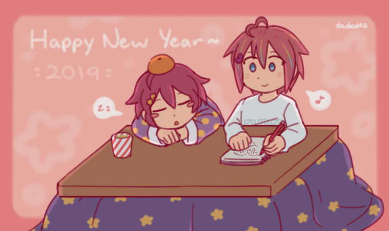
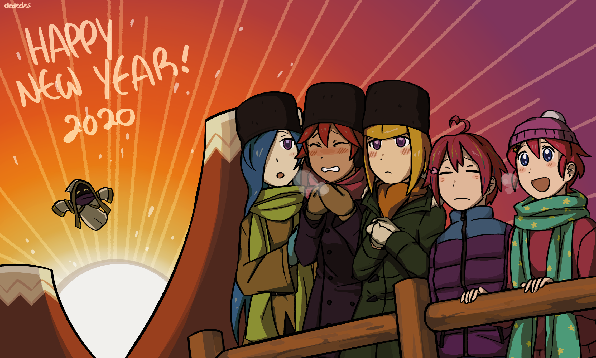
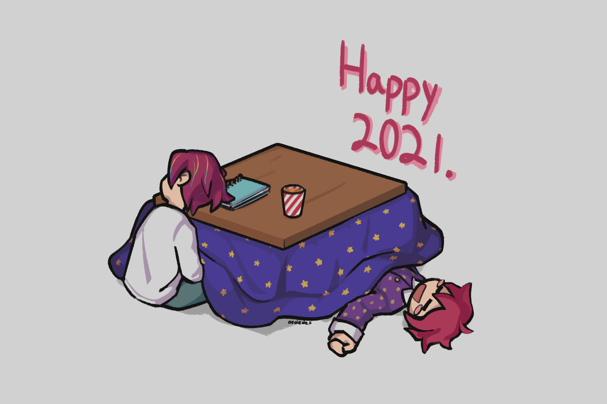
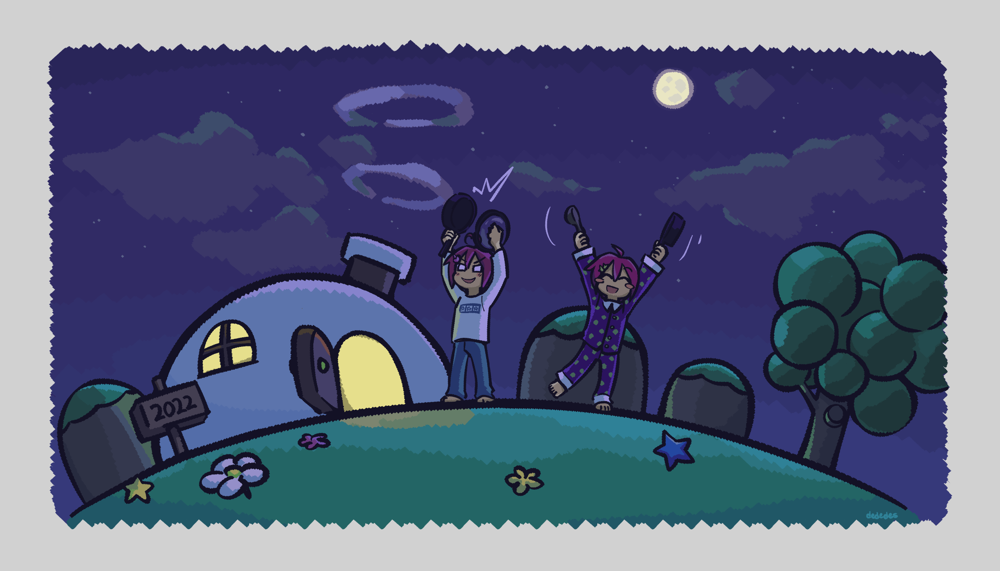
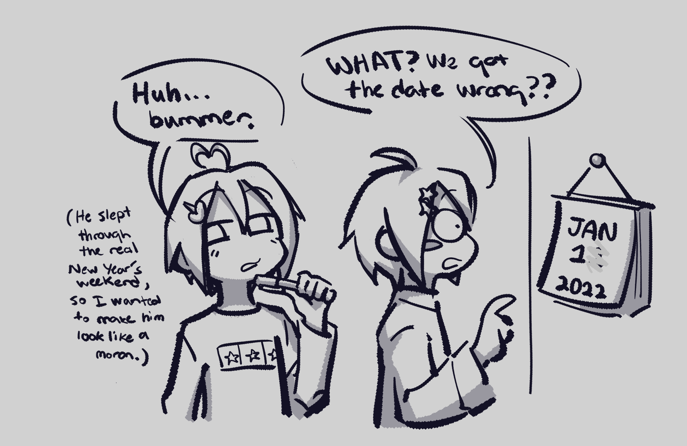
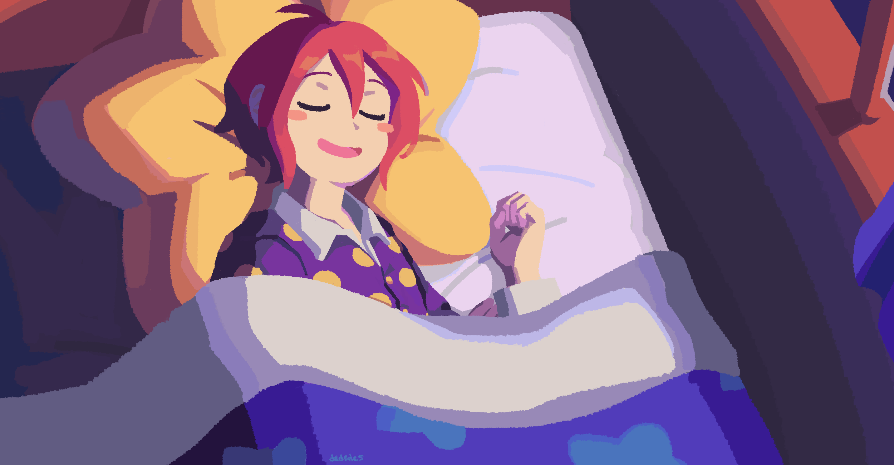

Since 2018 I've drawn something Kirby Gijinka-related to ring in the new year (last updated 9/9/2025).

Kirby and Void Termina. Void was mild-mannered back then.

Kirby, Void Termina, the Three Mage-Sisters, and Hyness. It references this Kirby Twitter commemorative art for 2018.

Kirby and Void Termina who fell asleep before midnight.


Kirby and Void Termina banging pots and pans 10 days late. I used to do that as a child, on time of course. I struggled to finish the drawing in time so I made a joke out of it.

Kirby sleeping like a baby.

The main 6, with Kirby being his usual terrible self. Not themed like the others but it fulfills its role as 1. a GKB drawing and 2. first art of the year.
Lightly inspired by this Ape Escape P&P wallpaper.